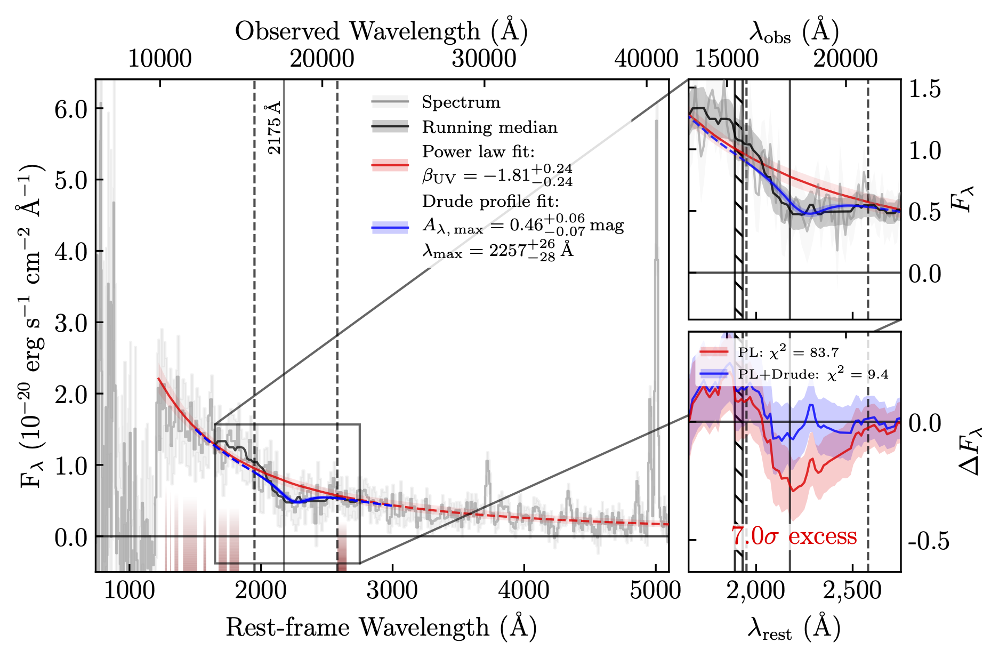

My Projects
Emission Line Galaxies in the Epoch of Reionisation
Studying the properties of Spitzer/IRAC excess galaxies in the Epoch of Reionisation with NIRSpec spectroscopy.

The 2175Å UV Bump at High Redshift
Identifying the 2175Å UV bump in high-redshift galaxies, and investigating the properties of dust in the early Universe and formation mechanisms. Find out more →